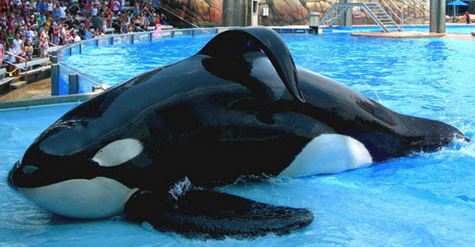
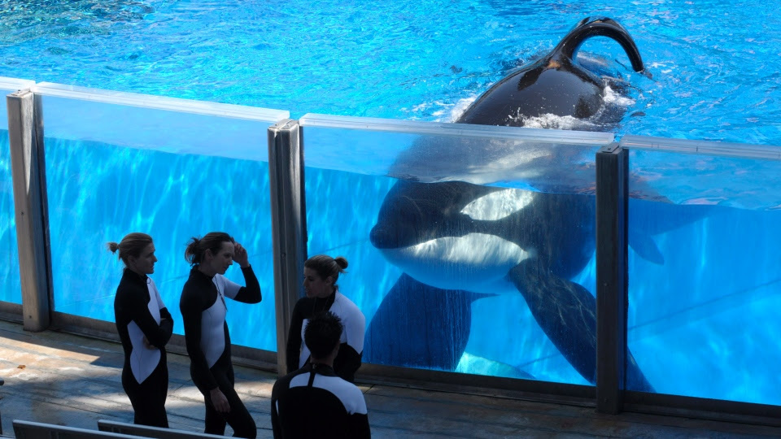

Killers in the park
Useless Piece of Trash
The orcas' fearsome reputation classes them among other terrifying predators like lions and crocodiles. Yet, while the aforementioned animals kill approximately 100 and 1,000 humans each year, respectively, there have been no reported human deaths due to a wild orca. Such a fact is certainly difficult to believe. Although the reason for why killer whales do not hunt humans is still unclear, studies in the past conducted by marine biologists have shown that killer whales are, in fact, playful and friendly creatures. They may not be so compatible with their prey, but they have strong attachments to their kin and seem to be on good terms with us.
So, it didn't take long for the public to be gradually amazed by the mysterious killer whales. Aquariums and marine parks alike didn't waste any time capturing orcas so that people can be entertained by their clever and lively nature. California’s Marineland of the Pacific was home of the first ever captive orca in 1961, and since that year, 156 wild killer whales have been taken into captivity. And four people have passed away because of captive killer whale attacks.
How is it possible that an animal that never harmed us in the wild killed four people while living under our own supervision?
Howard Garrett, a seasoned veteran in orca research and conservation, claims that the pressures of living in a small tank causes the "orcas to occasionally lash out". Garrett brings up a valid point. Because, like us, orcas, dolphins, and other marine mammals also experience stress.
Twenty-seven of the sixty captive killer whales in marine parks and aquariums today were captured from the wild. In the open ocean, those twenty-seven orcas swam with their pods, hunted their own food, and travelled almost 100 miles every day. But, after being captured, they are isolated in separate tanks. They are hand-fed. And, there's only so much swimming they can do in a thirty-five-foot-deep artificial tank.
Experiencing a drastic change in habitat and living conditions can be traumatizing for orcas. Their poor health while in captivity only adds to the pressures that they face. Many killer whales in marine parks suffer from broken teeth, kidney disease, and collapsed dorsal fins, which is a tell-tale sign of an unhealthy orca.
These conditions that orcas experience in captivity build stress upon them and cause them to be much more aggressive with humans than their wild counterparts. Popular marine parks such as SeaWorld state that they have policies put in place to ensure the safety of their trainers. "Forbidding individuals from entering the pool without attendants ready to provide assistance and equipping trainers with oxygen-supply systems to protect them from drowning" are some examples of their new policies. But what use are they going to be against a massive killer whale that is stressed and agitated after being subjected to horrible conditions?
In 2010, an orca named Tilikum killed his trainer, Dawn Brancheau during a Dine with Shamu show at SeaWorld. Tilikum, who was responsible for two human deaths beforehand, had dragged Brancheau under the water and stayed below the pool's surface. Employees desperately used nets and food to distract the orca, coercing him to let go of Brancheau's body. Tilikum finally released the trainer and was separated in a different pool where he was pacified by other staff. Unfortunately, it was too late. Dawn Brancheau passed away from drowning and blunt force trauma, having had her spinal cord detached and her left arm completely torn off.
She had been a skilled trainer and had gotten along well with Tilikum. So, the sudden and unpredictable attack by the killer whale was inconceivable.
Orcas are incredibly intelligent creatures, but their minds, too, can be clouded by stress and other pressures. No matter what policies marine parks put in place, trainers will always be at risk. The simplest solution is to free the captive orcas, but that's a path that parks like SeaWorld will never walk upon.
They are aware of the negative effects of captivity on killer whales but deny that any such effects are impacting the orcas' physical and mental health. Yet, when it comes to the point where trainers are dying because of killer whale attacks, are marine parks willing to gamble lives just to continue filling their pockets with money? Clearly, they are because they're quire adamant on keeping the orcas in their tanks.
However, it's a choice they have to rethink not only for the sake of their trainers, but also for the killer whales. These majestic animals deserve to be admired in the wilderness, where they frolic with joy. They shouldn't be in tiny, miserable tanks where they act to the audience as if they're content with their home. It applies to not only killer whales, but also every creature of the animal kingdom. Seeing the beauty of animals and nature in the wild is what's really pleasing to the eye. Because, like Howard Garrett says, animals in captivity is essentially deprivation and brutality presented as fun.